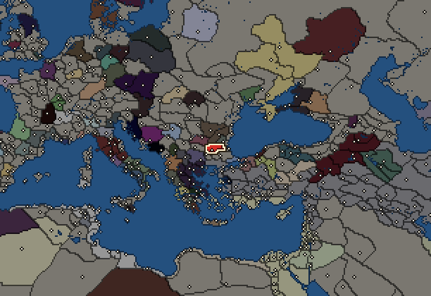
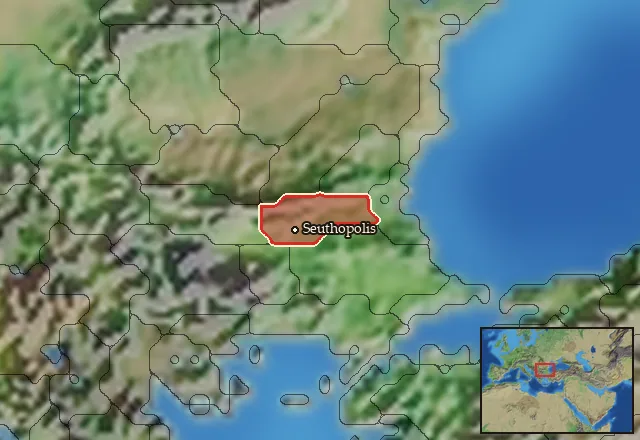

Odrysian Kingdom


- difficulty Very Difficult
- Thracian culture
- believes
 Thracian
Thracian - 1 settlement
- capital Seuthopolis
- 4,000 manpower
- 2 characters
- 15 faction units
- 434 regional units
The campaign brief
"The Thracians are the most numerous people in the world, except, of course, the Indians; and if they had one head, or were agreed among themselves, it is my belief that their match could not be found anywhere, and that they would very far surpass all other nations. But such union is impossible for them, and there are no means of ever bringing it about. Herein therefore consists their weakness." – Herodotus
Why yes, I am a smoke-treader, how could you tell? Ah, the meat, of course! Thank you for offering it, but we smoke-treaders practice absolute pacifism and may not harm a living soul – not even passively. I suppose the tragedy of us Thracians is that we always dream of peace, but the world never lets us find it, lest we renounce all worldly possessions and become travelling ascetics like myself. And that is no easy choice; I lost everything – twice – before I was ready to give myself over to the gods and walk the misty path of the smoke-treader. Yet, my misfortunes have been directly linked to the calamities which have befallen all of Thrace.
Even to this very day, our poets praise the deeds of Teres and his son Sitalces, who unified so many Thracian tribes under the Odrysians, and founded a kingdom that reached as far as the Danube and Strymon. An accomplishment that ensured their enduring veneration as immortal rider-gods. Yet, all were not brought into the Odrysian fold; for beyond the great waters of the Danube and the Propontis, many great Thracian nations remained apart – such as the Dacians, Getians and Mysians. Had our unification been complete, we could perhaps have staved off the many aggressors seeking to despoil us, and then we Thracians would have known lasting peace. Still, the elders assure us that Thrace never knew a happier century than the one inaugurated by Teres and Sitalces, and I can only trust their words, as not even I am old enough to have lived in such blessed times.
Alas, I was born in evil days: after Philip the Tyrant had brought all of Thrace under the Macedonian heel. I came into this world in the very year that an avenging dagger found Philip's black heart and sent the old serpent on his way to Tartarus. Yet, this happy occasion gave us little respite, since the viper's brood was every bit as venomous as his sire. But then fortune smiled upon us as Alexander the Butcher went east, and towards an ignominious end. The righteous Seuthes used the tyrant's absence to throw off the Macedonian yoke and re-establish the Odrysian Kingdom. Clearly, that adder's spawn, Alexander, feared the might of Thrace, for while he yet defiled the mortal realm with his presence, no Macedonian force had the audacity to tread on holy Thracian soil. But when the young viper did die a disgraceful death in distant Babylon, his western possessions fell into the hands of a true fiend of a man: Lysimachus. That beast, Lysimachus, marched into peace-loving Thrace, and hell followed with him.
I was but a youth the day Lysimachus' soldiers came to my village. Growing up in the foothills of the Rhodope mountains, and close to the mouth of the Ebros river, I had, of course, seen Greeks before – at a safe distance at least. Just like other children of the village, I had watched with amazement at the Greek cities on the coast below – remember, in those days there were no cities yet in the Odrysian Kingdom. What saved my life that day was in fact my fascination with watching the Pontic-bound ships of the Greeks sail into the Propontis. Heading back to the village, I was imagining how we Thracians one day would travel the Euxine in like manner, when gut-wrenching screams and shouts suddenly shook me out of my daydreams. As I stealthily reached the outskirts of the village, I beheld the true face of Hellenistic civilisation: Unspeakable scenes of horror and agony that cannot be described in words. I still thank the gods that my family was long dead by the time I arrived, but even more so that Seuthes' soldiers arrived shortly after myself and delivered swift justice to Lysimachus' butchers.
Since I was the only survivor from my village, Seuthes' soldiers decided to take me with them to the court at Seuthopolis, the new capital of the revived Odrysian Kingdom, and the first city built by Thracian hand. When I was brought before King Seuthes, I asked for a sword so that I could avenge my family by slaying Lysimachus. Instead, Seuthes pushed a lyre into my hands and declared that he already had more than enough warriors; if I truly wanted revenge on Lychimachus, I should give Thrace another Orpheus.
In the end, the war against Lysimachus reached a stalemate. The fiend himself ultimately perished by Greek hand rather than a Thracian one; but by that time, a new enemy was overrunning Thrace: The savage Celts. Meanwhile I had married and begotten children, who themselves had families of their own; and all lived prosperously in Seuthopolis. Yet, my renown as a lyrist and a poet was such, that I often performed at the local courts of subordinate rulers all around Thrace. And so it was, that while I was away, a Celtic army suddenly fell upon Seuthopolis; put the inhabitants to the sword and burnt the city to the ground. The demise of the first and only city of Thrace was so sudden that word of its fall did not reach me until I found its smouldering ruin on my return home. Of my family, only ashes remained.
Please do not shed any tears for me or my family: compared to Orpheus, I got away quite lightly. Weep for our beloved Thrace instead; for she is in turmoil and overrun by enemies on all fronts. Is there anyone who can save her? Well, perhaps you and your army could Pytros. You ask for my name? I am just a smoke-treader; I am Spartacus.
Starting diplomacy
Allied with (1):  Seleucid Empire
Seleucid Empire
Trade agreements with (1):  Seleucid Empire
Seleucid Empire
At war with (2):  Galatians ·
Galatians ·  Tylis
Tylis
Like every faction, it is also at war with the  Free Peoples, who hold every settlement no faction does.
Free Peoples, who hold every settlement no faction does.
Starting settlements
Odrysian Kingdom begins with 1 settlement and 4,000 manpower.
| Settlement | Region | Size | Manpower | Already built | |||||
|---|---|---|---|---|---|---|---|---|---|
| Seuthopolis (capital) | Odrysia | large town | 4,000 | 10 buildings |
What is already built in each settlement
Seuthopolis, in Odrysia: Small Treasury, Governor's Villa, Wooden Palisade, Homeland, Region Information Scroll, Roads, Local Barter, Irrigation Ditches (Crops), Basic Armoury, Cisterns (Sanitation)
Homeland
Odrysian Kingdom's homeland is 1 region. Only there can it install the Homeland government (more on homelands).

Starting characters
| Name | Role | Age | Name | Role | Age | ||||||
|---|---|---|---|---|---|---|---|---|---|---|---|
| Rhoigos | General | 42 | Rhaizdos | General | 40 |
Faction mechanics
From the game's own guide. See also the other game guides.
Special Mechanics
The Odrysian Kingdom has a mercenary centre in Kabyle, check its Region Information Building for more details.
Military reforms
The Odrysians have one reform.
Thracian Sica Cavalry Reform requirements: 75 Turns
Unlocks: Thracian Sica Cavalry
Reforms
For every faction: Military innovations have arrived!, Second wave of military innovations have arrived!.
Units you can recruit
The same as in the main campaign.